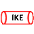

CiscoMonitor
{kind=link}
This ZenPack provides monitoring for Cisco routers and switches.
{kind=link}
Releases
Version 6.0.0-Download Released on 2022/02/16 Requires PythonCollector ZenPack, ZenPackLib ZenPack Compatible with Zenoss 6.x and Zenoss Cloud
Version 5.12.1-Download Released on 2021/07/12 Requires PythonCollector ZenPack, ZenPackLib ZenPack Compatible with Zenoss 6.x and Zenoss Cloud Version 5.12.0-Download Released on 2020/10/12 Requires PythonCollector ZenPack, ZenPackLib ZenPack Compatible with Zenoss 6.x and Zenoss Cloud
Version 5.11.1-Download: Released on 2020/04/15: Requires PythonCollector ZenPack, ZenPackLib ZenPack: Compatible with Zenoss 6.x and Zenoss Cloud
Contents
- Background
- Features
- Usage
- Choosing the Proper Device Class
- Configuring Credentials
- zProperties for CiscoMonitor
- Firewall Access
- Monitoring Logical Contexts
- Controlling Automatic Remodeling
- Monitoring Memory Buffer Pools
- Monitoring CPUs
- Monitoring Memory Pools
- Limitations
- Performance Optimizations for Event Transformations
- Monitoring Memory Utilization on Cisco ASR 9000
- Ethernet Interfaces
- Dynamic View and Service Impact
- Nexus Devices
- Multicast Groups
- Nexus 1000V and 1010 Devices
- VSG and VMZone
- Application Control Engine (ACE)
- Multilayer Director Switch: MDS 9000 Series
- ASA and FWSM
- QoS Class Maps
- Fans, Power Supplies, and Temperature Sensors
- Firepower FXOS
- DynamicView Views
- Appendix A: Included MIBs
- Appendix B: IP-SLA (RTTMON) Monitoring
- Known Issues
- Changes
Background
The CiscoMonitor ZenPack provides health and performance monitoring for a wide range of Cisco switches, routers, and network devices, including virtual resources such as virtual firewalls, virtual load balancers, and virtual extensible LANs.
Features
Monitoring is supported for the following Cisco product lines.
- ACE (Application Control Engine) Modules for Catalyst 6500 Series
- ASA 1000V Cloud Firewalls
- ASA 5500 Series Adaptive Security Appliances
- ASA Services Modules (ASA-SM) for Catalyst 6500 Series
- ASR 1000 Series Aggregation Services Routers
- ASR 9000 Series Aggregation Services Routers
- CSR 1000V Cloud Services Routers
- Catalyst 2960 Series Switches
- Catalyst 6500 Series Switches
- Catalyst 6500 Series Virtual Switching Systems (VSS)
- Firewall Services Modules (FWSM) for Catalyst 6500 Series
- Cisco Firepower Extensible Operating System (FXOS)
- Cisco Firepower Threat Defense (FTD)
- MDS 9000 Series Multilayer Switches
- Nexus 1000v Series Switches
- Nexus 1010 Series Virtual Services Appliances
- Nexus 2000 Series Fabric Extenders
- Nexus 3000 Series Switches
- Nexus 5000 Series Switches
- Nexus 6000 Series Switches
- Nexus 7000 Series Switches
- Nexus 9000 Series Switches
- TelePresence Codecs
- Virtual Security Gateway (VSG) for Nexus 1000v Series Switches
- Wireless LAN Controllers (WLC)
The following common features are available across supported products:
CiscoMonitor Network Map
{kind=link}
Discovery
- Chassis
- Fans
- Fan Modules
- Fibre Channel Interfaces and Modules
- IO Cards
- Line Cards
- Module Fans
- Other Logical Interfaces
- Physical Ports, Interfaces, Virtual Interfaces and SubInterfaces
- Port Channels and Bundles
- Power Supplies
- QoS Class Maps
- RTT Probes
- Supervisor Modules
- Temperature Sensors
- VLANs
- VRFs
Monitoring
- Event collection from
syslogand SNMP traps - CPU and memory utilization for chassis and supervisor modules
- Memory buffer pool monitoring (optional)
- Power consumption and status for chassis and FRUs
- Power available and drawn for power supplies
- Rotates per minute and status for Module Fans
- Status for Fan Modules
- Status for IO Cards
- Temperature for temperature sensors
- Interface utilization, throughput, error rate and status for all physical Ethernet interfaces
- Interface utilization, throughput and status for all logical Ethernet interfaces
- Throughput and status for VLANs
Additional Features
Discovery and monitoring are additionally supported for the following specific product lines:
Catalyst 6500 Features
- Virtual Switching System (VSS)
- Service Modules
ACE Features
- Virtual Contexts
- Service Policies
- Server Farms
- Real Servers
FWSM Features
- Security Contexts
- L4/L7 Resources
Firepower FXOS Features
- Chassis
- Ethernet Interfaces
- Fan Modules
- Fans
- IO Cards
- Management Interfaces
- Port Channels
- Supervisor Modules
- VLANs
- VSANs
- Virtual Ethernet Interfaces
Firepower FTD Features
- Ethernet Interfaces
- Resources
- VLANs
Nexus 9000 Features
- Fabric Cards
- Virtual Device Contexts (VDCs)
- VXLAN Network Identifiers (VNIs)
- Network Virtualization Endpoints (NVEs)
- NVE Peers
- Multicast Groups
Nexus 7000 Features
- Fabric Cards
- Fabric Extenders
- Network Virtualization Endpoints (NVEs)
- Virtual Device Contexts (VDCs)
Nexus 6000 Features
- Fabric Extenders
- Virtual Device Contexts (VDCs)
- Fibre-Channel Ports
- VSANs
- Storage Zones
- Storage Zone Sets
Nexus 5000 Features
- Nexus 2000 Fabric Extenders
- Fibre-Channel Ports
- VSANs
- Storage Zones
- Storage Zone Sets
Nexus 1010 Features
- Virtual Services Blades
Nexus 1000V Features
- Virtual Ethernet Modules (VEMs)
- Virtual Ethernet Interfaces
VSG Features
- Virtual Machine Zones
Virtual Security Gateway Features
- Security Zones
ASR 9000 and 1000 Features
- MPLS L3 VPNs
CSR 1000V Features
- Similar to ASR 1000 without hardware components.
ASA 5500 Features
- Security Contexts
- IPSEC tunnels
- IKE Tunnels
- AnyConnect Sessions
ASA 1000V Features
- Similar to ASA 5500 without hardware components.
MDS 9000 Features
- Fibre-Channel Ports
- VSANs
- Storage Zones
- Storage Zone Sets
Wireless LAN Controller Features
- Access Points
TelePresence Codecs
- TelePresence peripherals
Class-Based QoS Monitoring
Zenoss will model QoS class maps associated with network interfaces using the SNMP MIB:
CISCO-CLASS-BASED-QOS-MIB.
You will be able find all modeled class maps for a device by clicking QoS Class Maps under Components in the device's left navigation pane.
Interface Class Maps
{kind=link}
Notes:
-
Since the QoS component require the associated interfaces to be already modeled via the cisco.snmp.Interfaces modeler, you may need to model your device twice initially for the QoS components to model. If QoS Class Maps component are not shown it means no class maps were modeled.
-
If you believe service policies have been configured and Zenoss should have found them, verify that the cisco.snmp.QoSClassMaps modeler plugin is enabled, you have interface components, and then remodel the device.
-
To see just the class maps associated with a specific interface you can find the interface in question then choose QoS Class Maps in the Display drop-down instead of Graphs.
QoS Class Maps
{kind=link}
The following datapoints are monitored for all class maps:
- Pre-Policy Throughput in bits/sec. (cbQosCMPrePolicyByte)
- Pre-Policy Packet Rate in packets/sec. (cbQosCMPrePolicyPkt)
- Post-Policy Throughput in bits/sec. (cbQosCMPostPolicyByte)
- Drops in bits/sec. (cbQosCMDropByte)
- Drops in packets/sec. (cbQosCMDropPkt)
- Drops (no buffer) in packets/sec. (cbQosCMNoBufDropPkt)
- Fragments in bits/sec. (cbQosCMFragmentByte)
- Fragments in packets/sec. (cbQosCMFragmentPkt)
The following datapoints are monitored for class maps with queueing configurations:
- Queue Depth (Current) in bytes. (cbQosQueueingCurrentQDepth)
- Queue Depth (Maximum) in bytes. (cbQosQueueingMaxQDepth)
- Queue Discards in bits/sec. (cbQosQueueingDiscardByte)
- Queue Discards in packets/sec. (cbQosQueueingDiscardPkt)
The following datapoints are monitored for class maps with traffic shaping configurations.
- Shaping Queue Depth in packets. (cbQosTSStatsCurrentQSize)
- Delayed by Shaping in bits/sec. (cbQosTSStatsDelayedByte)
- Delayed by Shaping in packets/sec. (cbQosTSStatsDelayedPkt)
- Dropped by Shaping in bits/sec. (cbQosTSStatsDropByte)
- Dropped by Shaping in packets/sec. (cbQosTSStatsDropPkt)
The following datapoints are monitored for class maps with policing configurations.
- Policing Conformed in bits/sec. (cbQosPoliceConformedByte)
- Policing Conformed in packets/sec. (cbQosPoliceConformedPkt)
- Policing Exceeded in bits/sec. (cbQosPoliceExceededByte)
- Policing Exceeded in packets/sec. (cbQosPoliceExceededPkt)
- Policing Violated in bits/sec. (cbQosPoliceViolatedByte)
- Policing Violated in packets/sec. (cbQosPoliceViolatedPkt)
The 64bit versions of all of the above counters will be used if Zenoss is monitoring the device with SNMPv2c or greater, and if the device supports them. Otherwise, the 32bit versions of the counters will be used.
Usage
Choosing the Proper Device Class
To ensure that the most appropriate discovery and monitoring is being performed for a device it must be placed into the appropriate device class. The following table maps the type of Cisco device to the device class to which it should be assigned.
NOTE: It is not always necessary to manually assign devices to device classes. When adding devices using the Add Multiple Devices wizard, you will have a reduced set of choices that are intuitive based on the type of device.
| Cisco Device Type | Zenoss Device Class |
|---|---|
| ACE | /Network/Cisco/ACE |
| ASA | /Network/Cisco/ASA |
| ASA-SM | /Network/Cisco/ASA |
| ASR 1000 | /Network/Cisco/ASR/1000 |
| ASR 9000 | /Network/Cisco/ASR/9000 |
| CatOS (Other) | /Network/Cisco/CatOS |
| Catalyst 6500 | /Network/Cisco/6500 |
| Catalyst 6500 VSS | /Network/Cisco/6500/VSS |
| Firepower FXOS | /Network/Cisco/Firepower/FXOS |
| Firepower FTD | /Network/Cisco/Firepower/FTD |
| FWSM | /Network/Cisco/FWSM |
| IOS (Other) | /Network/Cisco |
| MDS 9000 | /Network/Cisco/MDS/9000 |
| Nexus 1000V | /Network/Cisco/Nexus/1000V |
| Nexus 1010 | /Network/Cisco/Nexus/1010 |
| Nexus 3000 | /Network/Cisco/Nexus/3000 |
| Nexus 5000 + 2000 | /Network/Cisco/Nexus/5000 |
| Nexus 6000 | /Network/Cisco/Nexus/6000 |
| Nexus 7000 | /Network/Cisco/Nexus/7000 |
| Nexus 9000 | /Network/Cisco/Nexus/9000 |
| TelePresence Codec | /Network/Cisco/Codec |
| VSG | /Network/Cisco/VSG |
| WLC | /Network/Cisco/WLC |
| Catalyst 9800 | /Network/Cisco/WLC/C9800 |
Configuring Credentials
Zenoss uses different network protocols to monitor different types of Cisco devices. In many cases Zenoss will use multiple protocols for the same device. The following table describes the supported device types and the protocol(s) are used to discover and monitor them:
| Cisco Device Type | Discovery and Monitoring Protocol(s) |
|---|---|
| ACE | ICMP, SNMP, API (XML over HTTPS: 443/tcp) |
| ASA | ICMP, SNMP |
| ASA-SM | ICMP, SNMP |
| ASR 1000 | ICMP, SNMP |
| ASR 9000 | ICMP, SNMP, Telnet or SSH |
| CatOS (Other) | ICMP, SNMP |
| Catalyst 6500 | ICMP, SNMP, Telnet or SSH |
| Catalyst 6500 VSS | ICMP, SNMP, Telnet or SSH |
| Firepower FXOS | ICMP, SNMP |
| Firepower FTD | ICMP, SNMP |
| FWSM | ICMP, SNMP |
| IOS (Other) | ICMP, SNMP |
| MDS 9000 | ICMP, SNMP |
| Nexus 1000V | ICMP, SNMP, Netconf (XML over SSH) |
| Nexus 1010 | ICMP, SNMP, Netconf (XML over SSH) |
| Nexus 3000 | ICMP, SNMP, Netconf (XML over SSH) |
| Nexus 5000 + 2000 | ICMP, SNMP, Netconf (XML over SSH) |
| Nexus 6000 | ICMP, SNMP, Netconf (XML over SSH) |
| Nexus 7000 | ICMP, SNMP, Netconf (XML over SSH) |
| Nexus 9000 | ICMP, NX-API (XML over HTTP) |
| TelePresence Codec | ICMP, SNMP |
| VSG | ICMP, SNMP, SSH, Netconf (XML over SSH) |
| WLC | ICMP, SNMP |
| Catalyst 9800 | ICMP, SNMP |
The following configuration properties should be set to provide the necessary credentials for the management protocols listed above:
| Protocol | Configuration Properties | Notes |
|---|---|---|
| SNMPv1 and SNMPv2c | zSnmpCommunities, zSnmpCommunity | SNMPv1 will only be used if SNMPv2c tests fail. |
| SNMPv3 | zSnmpSecurityName, zSnmpAuthType, zSnmpAuthPassword, zSnmpPrivType, zSnmpPrivPassword |
SNMPv3 must be specified using zSnmpVer. |
| Telnet, SSH, Netconf | zCommandProtocol, zCommandPort, zCommandUsername, zCommandPassword |
Protocol and port control whether SSH or telnet will be used. |
| ACE XML over HTTP API | zCommandUsername, zCommandPassword, zCiscoACEUseSSL |
|
| NX-API over HTTP API | zCommandUsername, zCommandPassword, zCiscoNXAPIUseSSL, zCiscoNXAPIPort |
zProperties for CiscoMonitor
Relevant CiscoMonitor zProperties, their descriptions, and defaults are presented.
- Empty defaults indicate an empty string or list, appropriate to its type.
- Default value with an astrisk (*), indicate that the default is inherited from the globally defined value. See the Device configuration properties section of the Zenoss Administration Guide for more information about these properties.
| zProperty | Description | Default |
|---|---|---|
| zCommandUsername | Username used for various APIs | * |
| zCommandPassword | Password used for various APIs | * |
| zCommandPort | Port used for various APIs | 23 (ASR and CSR only) |
| zCiscoACEUseSSL | Use SSL for ACE communication | true |
| zCiscoNXAPIPort | NX-API port setting | 443 |
| zCiscoNXAPIUseSS | Use SSL for NX-API communication | true |
| zCiscoNXAPIInterval | Seconds between NX-API collections | 300 |
| zCiscoRemodelEventClassKeys | Keys which trigger source device remodels | |
| zEntSensorStatusIgnoreValues | Don't model environment sensors with these statuses. | ['unavailable'] |
| zIdiomUsername | Username for the IDIOM API | |
| zIdiomPassword | Password for the IDIOM API | |
| zIncludeDescriptionInTempSensorId | Include description in temp sensor ID. Applicable only for entSensorValueEntry OID. Note: if set to true, historical data for existing temperature sensors will be lost. |
false |
| zInterfaceMapIgnoreNames | Interface names not to model | * |
| zInterfaceMapIgnoreTypes | Interface types not to model | * |
| zInterfaceMapIgnoreDescriptions | Don't model interfaces with these descriptions. | * |
Firewall Access
The firewall access to and from the Zenoss collector server to the monitored devices can depend on the type of device being monitored. The following table provides a consolidated view of all required network access.
| Source | Destination | Port & Protocol |
|---|---|---|
| Zenoss Collector | Monitored Device | ICMP (ping) |
| Zenoss Collector | Monitored Device | 161/udp (SNMP) |
| Zenoss Collector | Monitored Device | 22/tcp (SSH) |
| Zenoss Collector | Monitored Device | 23/tcp (telnet) |
| Zenoss Collector | Monitored Device | 443/tcp (HTTPS) |
| Zenoss Collector | Monitored Device | 80/tcp (HTTP) |
| Monitored Device | Zenoss Collector | ICMP (ping) |
| Monitored Device | Zenoss Collector | 162/udp (SNMP trap) |
| Monitored Device | Zenoss Collector | 514/udp (syslog) |
Monitoring Logical Contexts
Several of the supported device types have the ability to create logical contexts of various kinds. In these cases, Zenoss has the ability to identify the logical contexts and associate them with the admin or parent context. The following is a list of device types that support logical contexts and how Zenoss refers to them.
- ACE: Virtual Contexts
- FWSM: Security Contexts
- ASA: Security Contexts, IPSec Tunnels, IKETunnels
- Nexus 9000: VDCs
- Nexus 7000: VDCs
- Nexus 6000: VDCs
For Zenoss to be able to discover and associate these types of logical contexts with the admin or parent context, the management IP address of each logical context must itself be discovered as a separate device in Zenoss. The logical contexts should be placed into the same device class as the device they're a context of. For example, a Nexus 7000 VDC should be placed in the /Network/Cisco/Nexus/7000 device class.
Controlling Automatic Remodeling
Certain SNMP traps will cause Zenoss to schedule an immediate remodeling of the device from which the trap was sent. The traps that will cause this automatic remodeling by default are:
- ccmCLIRunningConfigChanged
- cefcFRUInserted
- cefcFRURemoved
- cefcModuleOperStatus
- cefcModuleStatusChange
- ceSensorExtThresholdNotification
- cesRealServerStateChangeRev1
- ciscoSlbExtMIBConform
- ciscoSlbVServerStateChange
- entConfigChange
- vtpVlanCreated
- vtpVlanDeleted
This list can be modified by using changing the zCiscoRemodelEventClassKeys configuration property.
Monitoring Memory Buffer Pools
Monitoring detailed memory buffer pool statistics is not enabled. When enabled, the following statistics can be monitored on any Cisco devices that support OLD-CISCO-MEMORY-MIB.
Memory Buffers
- Allocation of Max
- Usage of Total
- Failures
- Hits
- Misses
- Creates
- Trims
Buffer elements and small, medium, big, large and huge buffer pools are included for each of these categories.
To enable memory buffer pool monitoring you must bind the Memory Buffer Pools monitoring template to the desired device class or device. You will then find the associated graphs on the Graphs screen for each device to which the monitoring template has been bound.
Monitoring CPUs
While extensive CPU monitoring is done by default for most Cisco devices and applicable modules on those devices, it can sometimes be desirable to monitor CPUs directly using CISCO-PROCESS-MIB. If Zenoss isn't already capturing CPU information you know exists in CISCO-PROCESS-MIB, you can enable further support by enabling the cisco.snmp.CPUs modeler plugin.
Devices with multiple CPUs will be monitored via Cisco SNMP datasource, which uses the zenpython service to collect SNMP metrics for each CPU and calculates the average utilization basing on the collected values.
NOTE : For Cisco ASA Devices (/Network/Cisco/ASA device class), if device doesn't support modern CPU metrics (e.g. cpmCPUTotal5minRev: 1.3.6.1.4.1.9.9.109.1.1.1.1 OID), Device-Legacy monitoring template will be used instead of Device-Modern one.
Monitoring Memory Pools
If you want Zenoss to model and monitor all memory pools on your Cisco device using the CISCO-MEMORY-POOL-MIB, enable the cisco.snmp.MemoryPools modeler plugin.
Limitations
The following potential limitations should be noted.
- This ZenPack does not provide support for UCS. Instead, UCS is supported in ZenPacks.zenoss.CiscoUCS.
- This ZenPack does not provide support for Cisco CallManager. Instead, Cisco CallManager is supported in ZenPacks.zenoss.CallManagerMonitor.
- In Zenoss 5.x, graph points from same graph cannot be used in calculations for other points. (ZEN-18541)
- In Zenoss 5.x, Custom graph point with Type COMMENT is not supported. (ZEN-18540)
- Line cards Operational Status and UpTime are not monitored for Catalyst 9000 Series Switches which are coupled using StackWise technology.
Performance Optimizations for Event Transformations
In case you experience a lot of the event transformations, caused by SNMP traps or other activity from your Cisco devices, the speed of event processing might be affected. There are several things which you can do to mitigate the effect:
- You can switch zeneventd service to debug mode and check its logs for slow transformations and disable those which aren't critical. To disable a transformation but leave the original mapping untouched, you can create a copy of the original mapping with empty Transform box and lower sequence number under /Status event class, Event Class Key field must correspond to the original.
- Check
Controlling Automatic Remodelingsection in the documentation and modify zCiscoRemodelEventClassKeys zProperty for a device or device class to reduce the amount of automatic device remodeling during the event transformations.
Monitoring Memory Utilization on Cisco ASR 9000
If the amount of RAM installed on your Cisco ASR 9000 device is less than 4GB, the Memory Utilization graph and all the related datasources will be available on the device's level, and can be modified under DeviceMemoryUsage32Bit monitoring template. Otherwise, the Memory Utilization graph and all the related datasources will be shown on Supervisor Modules component level and available for modifications under SupModuleExtended monitoring template.
Ethernet Interfaces
In CiscoMonitor we provide a custom component type called Ethernet Interfaces which shows a type of ethernetCsmacd_64 but binds the EthernetInterface template which is not matching the standard behavior described in the Zenoss documentation.
Dynamic View and Service Impact
CiscoMonitor supports a wide variety of devices and therefore a variety of DynamicView/Impact (DVI) relationships exist.
NOTE: An interface can be attached to a module, or a directly to a device.
The following diagrams summarize Impact/DynamicView support:
Nexus Devices
The following covers Nexus devices in general, including Nexus 7000 and Nexus 9000 switches.
DVI Relations for Nexus Series
{kind=link}
NOTE: Port refers to all network interfaces except PortChannel and VLAN.
- Device impacts VTEP/NVE and LineCard modules
- Device impacts Port (if no module)
- VTEP/NVE impacts VNI
- LineCard impacts network Port
- Port impacts PortChannel or VLAN
- PortChannel impacts VLAN
- VLAN impacts VNI
- Interface (all types) impacts its containing VRF
- Port impacts its child SubPort
The following diagram outlines extra DVI relationships. The first two are repeated from above for clarity:
Extra DVI Relations for Nexus
{kind=link}
- Port impacts SubPort
- Interface (all types) impacts its containing VRF
- Port impacts its containing MPLS V3 VPN
Multicast Groups
Multicast Groups have impact relations between VRFs and VNIs. These relations augment the generic Nexus relations above. Note the usual Device-Module-Interface relations:
DVI Relations for Multicast Group, VRF, VNI
{kind=link}
- Device impacts MulticastGroup (if not part of a VRF)
- Interface impacts VRF
- VRF impacts MulticastGroup
- MulticastGroup impacts VNI
Nexus 1000V and 1010 Devices
The following is specific to Nexus 1000V and 1010:
DVI Relations for Nexus1000V and Nexus1010
{kind=link}
- VirtualServiceAppliance (AKA: Nexus 1010) impacts VirtualSericeBlade
- VirtualSericeBlade impacts VSM (aka: Nexus 1000V or VirtualServiceModule)
- External Port impacts VSM
- VSM impacts VEM (VirtualEthernetModule)
- VSM impacts VEI (VirtualEthernetInterface)
- VEI impacts assigned vSphere VMs
VSG and VMZone
The following is specific to Virtual Security Group (VSG) and VMZone. Portions of the Nexus 1010 and VirtualServiceBlade are similar to above:
DVI Relations for VSG and VMZone
{kind=link}
- VirtualServiceAppliance (aka: VSA) impacts VirtualSericeBlade
- VirtualSericeBlade impacts VSG
- VSG impacts VMZone
Application Control Engine (ACE)
The following is specific to ACE. Note that ACE hardware components are also identified as ACE Contexts:
DVI Relations for ACE
{kind=link}
- ServiceModule impacts ACE
- ACE impacts ACE Context
- ACE impacts ACE Service Policy
- ACE Real Server impacts ACE Server Farm
- ACE Server Farm impacts ACE Service Policy
Multilayer Director Switch: MDS 9000 Series
The following is specific to MDS 9000, FibreChannel, VSAN, Zone and ZoneSet:
DVI Relations for MDS 9000
{kind=link}
- MDS9000 impacts FC-Module
- MDS9000 impacts FC port (if no module)
- FC port impacts VSAN
- VSAN impacts Zone
- VSAN impacts ZoneSet
- Zone impacts ZoneSet
ASA and FWSM
The ASA (Adaptive Security Appliance) and FWSM (Firewall Services Module) are covered here. Their architecture is nearly identical:
DVI Relations for ASA and FWSM
{kind=link}
- Module impacts ASA/FWSM
- ASA/FWSM impacts Context
QoS Class Maps
QoS Class Maps affect their interface:
DVI Relations QoS Class Map
{kind=link}
- Device (or module) impacts Interface
- Interface impacts QoSClassMap
Fans, Power Supplies, and Temperature Sensors
All Fans, Power Supplies, Fan Modules and Temperature Sensors affect device directly:
DVI Relations for Fans, Power Supplies, and Temperature Sensors
{kind=link}
- Fan impacts Device
- PowerSupply impacts Device
- TemperatureSensor impacts Device
Firepower FXOS
{kind=link}
- Fan Modules impacts Device
- Module Fans impacts Fan Modules
DynamicView Views
**DVI VLAN View
{kind=link}
DynamicView displays are available for the following components:
- Interface
- Module
- MulticastGroup
- NVE
- PortChannel
- VLAN
- VNI
- VRF
NOTE: There are no DynamicView views for QoS Class Maps, Fans, Temperature Sensors, Power Supplies and Fan Modules components.
NOTE: Ensure you are using DynamicView 1.6.1 or newer, otherwise you may see this error in a DynamicView view:
[Error with zenjserver, please check log for errors.]
Network Icons
The following network icons are used in Impact and DynamicView diagrams in the UI:
| AnyConnectSession | |
| Fan | |
| FanModule | |
| IKETunnel |
 |
| Interface | |
| IPSecTunnel | |
| Module | |
| MulticastGroup | |
| NVE | |
| PortChannel | |
| VLAN | |
| VNI | |
| VRF | |
| Zone | |
| ZoneSet |
Appendix A: Included MIBs
This ZenPack installs the following MIBs. Any SNMP traps defined in these MIBs will be decoded by Zenoss.
- BRIDGE-MIB
- CISCO-CONFIG-MAN-MIB
- CISCO-ENHANCED-SLB-MIB
- CISCO-ENTITY-FRU-CONTROL-MIB
- CISCO-ENTITY-SENSOR-EXT-MIB
- CISCO-ENTITY-SENSOR-MIB
- CISCO-ENVMON-MIB
- CISCO-FC-FE-MIB
- CISCO-FLEX-LINKS-MIB
- CISCO-HSRP-MIB
- CISCO-IF-EXTENSION-MIB
- CISCO-L2-TUNNEL-CONFIG-MIB
- CISCO-LINK-ERROR-MONITOR-MIB
- CISCO-MAC-NOTIFICATION-MIB
- CISCO-MODULE-AUTO-SHUTDOWN-MIB
- CISCO-NS-MIB
- CISCO-OSPF-MIB
- CISCO-OSPF-TRAP-MIB
- CISCO-RTTMON-MIB
- CISCO-SLB-EXT-MIB
- CISCO-SLB-HEALTH-MON-MIB
- CISCO-SLB-MIB
- CISCO-SMI
- CISCO-ST-TC
- CISCO-STP-EXTENSIONS-MIB
- CISCO-TC
- CISCO-VLAN-MEMBERSHIP-MIB
- CISCO-VSAN-MIB
- CISCO-VTP-MIB
- CISCO-ZS-MIB
- ENTITY-MIB
- ENTITY-SENSOR-MIB
- HC-ALARM-MIB
- IF-MIB
- OLD-CISCO-INTERFACES-MIB
- OLD-CISCO-SYSTEM-MIB
- OLD-CISCO-TCP-MIB
- OLD-CISCO-TS-MIB
- P-BRIDGE-MIB
- Q-BRIDGE-MIB
- RMON2-MIB
- SNMPv2-MIB
- TOKEN-RING-RMON-MIB
- TOKEN-RING-RMON-MIB
- SNMPv2-SMI
- SNMPv2-TC
- SNMP-FRAMEWORK-MIB
- RFC1213-MIB
- INET-ADDRESS-MIB
Appendix B: IP-SLA (RTTMON) Monitoring
IP-SLA refers to Cisco IOS IP Service Level Agreement monitoring. This ZenPack provides limited IP-SLA support for IP-SLA Probes found in the component grid for devices that support the CISCO-RTTMON-MIB MIB. RTTMON refers to Round Trip Time Monitor.
Templates that use IP-SLA are all in the /Network/Cisco device class:
- RTTProbeGeneric
- RTTProbeICMPJitter
- RTTProbeJitter
We discuss each of these templates in order.
RTTProbeGeneric
Provides generic metrics round time packet traversal.
Data Points
| Data Source | Data Point | Description |
|---|---|---|
| operSense | operSense | A sense code for the completion status of the latest RTT operation. |
| rttMonLatestRttOperTable \ | rttMonLatestRttOperTable \ | The completion time of the latest RTT operation successfully completed. |
Graphs
| Graph | Graph Points | Description |
|---|---|---|
| Round Trip | rttMonLatestRttOperTable | Generic round-trip time probe |
RTTProbeICMPJitter
This template provides stats, for ICMP Jitter rrtType probes.
Data Points
| Data Source | Data Point | Description |
|---|---|---|
| rttMonLatestIcmpJitterAvgJitter \ | rttMonLatestIcmpJitterAvgJitters \ | The average of positive and negative jitter values in Source-to-Destination and Destination-to-Source direction. |
| rttMonLatestIcmpJitterNumOW \ | rttMonLatestIcmpJitterNumOW \ | The number of successful one way trip time measurements. |
| rttMonLatestIcmpJitterNumRTT \ | rttMonLatestIcmpJitterNumRTT \ | The number of RTT's that were successfully measured. |
| rttMonLatestIcmpJitterPktLoss \ | rttMonLatestIcmpJitterPktLoss \ | The number of packets lost. |
Graphs
| Graph | Graph Points | Description |
|---|---|---|
| Jitter | rttMonLatestIcmpJitterAvgJitter | Jitter |
| Packet Loss | rttMonLatestIcmpJitterPktLoss | Packet Loss |
| Success Stats | rttMonLatestIcmpJitterNumOW rttMonLatestIcmpJitterNumRTT |
Successful measurements |
RTTProbeJitter
Jitter metrics from CISCO-RTTMON-MIB
Data Points
| Data Source | Data Point | Description |
|---|---|---|
| echoNumPackets | echoNumPackets | This uses the rttMonEchoAdminNumPackets object. This value represents the number of packets that need to be transmitted. This value is currently used for Jitter probe. This object is applicable to jitter probe only. |
| jitterNumRTT | jitterNumRTT | This uses the rttMonLatestJitterOperNumOfRTT object. The number of RTT's that were successfully measured. |
| jitterPktLossDS | jitterPktLossDS | This uses the rttMonLatestJitterOperPacketLossDS object. It is the number of packets lost when sent from destination to source. |
| jitterPktLossSD | jitterPktLossSD | This uses the rttMonLatestJitterOperPacketLossSD object. The number of packets lost when sent from source to destination. |
| jitterRTTSum | jitterRTTSum | This uses the rttMonLatestJitterOperRTTSum object. The sum of Jitter RTT's that are successfully measured (low order 32 bits). |
| operSense | operSense | This uses the rttMonLatestRttOperSense object. A sense code for the completion status of the latest RTT operation. |
| rttMonLatestJitterOperMOS \ | rttMonLatestJitterOperMOS \ | The MOS value for the latest jitter operation in hundreds. |
| rttMonLatestJitterOperMaxOfNegativesDS \ | rttMonLatestJitterOperMaxOfNegativesDS \ | The maximum of all negative jitter values from packets sent from destination to source. |
| rttMonLatestJitterOperMaxOfNegativesSD \ | rttMonLatestJitterOperMaxOfNegativesSD \ | The maximum of absolute values of all negative jitter values from packets sent from source to destination. |
| rttMonLatestJitterOperMaxOfPositivesDS \ | rttMonLatestJitterOperMaxOfPositivesDS \ | The maximum of all positive jitter values from packets sent from destination to source. |
| rttMonLatestJitterOperMaxOfPositivesSD \ | rttMonLatestJitterOperMaxOfPositivesSD \ | The maximum of all positive jitter values from packets sent from source to destination. |
| rttMonLatestJitterOperMinOfNegativesDS \ | rttMonLatestJitterOperMinOfNegativesDS \ | The minimum of all negative jitter values from packets sent from destination to source. |
| rttMonLatestJitterOperMinOfNegativesSD \ | rttMonLatestJitterOperMinOfNegativesSD \ | The minimum of absolute values of all negative jitter values from packets sent from source to destination. |
| rttMonLatestJitterOperMinOfPositivesDS \ | rttMonLatestJitterOperMinOfPositivesDS \ | The minimum of all positive jitter values from packets sent from destination to source. |
| rttMonLatestJitterOperMinOfPositivesSD \ | rttMonLatestJitterOperMinOfPositivesSD \ | The minimum of all positive jitter values from packets sent from source to destination. |
Graphs
| Graph | Graph Points | Description |
|---|---|---|
| Average Jitter | rttMonLatestJitterOperMaxOfNegativesDS rttMonLatestJitterOperMaxOfNegativesSD rttMonLatestJitterOperMaxOfPositivesDS rttMonLatestJitterOperMaxOfPositivesSD rttMonLatestJitterOperMinOfNegativesDS rttMonLatestJitterOperMinOfNegativesSD rttMonLatestJitterOperMinOfPositivesDS rttMonLatestJitterOperMinOfPositivesSD \ |
Average Jitter Metrics |
| MOS Score | rttMonLatestJitterOperMOS | Mean Open Score (VoIP) |
| Packet Loss | echoNumPackets jitterPktLossDS jitterPktLossSD \ |
Packet Loss |
| Round-Trip Time | jitterNumRTT jitterRTTSum \ |
Round Trip |
CiscoStatus Threshold
Certain pre-configured CiscoStatus thresholds have no configured value for their event class. This is by design and should not be altered.
These thresholds make use of the event class key and a combination of event class mappings and event transform code to assign generated events to the appropriate event class.
The CiscoStatus threshold is a special threshold that uses preconfigured maps of numeric values returned by SNMP datasources to Zenoss event severities. The following OIDs and values are supported:
- CISCO-ENTITY-FRU-CONTROL-MIB::cefcModuleOperStatus
- (1) unknown - Critical
- (2) OK - Clear
- (3) disabled - Clear
- (4) OK (diag failed) - Warning
- (5) boot - Warning
- (6) self-test - Warning
- (7) failed - Critical
- (8) missing - Critical
- (9) mismatch w/parent - Critical
- (10) mismatch w/config - Critical
- (11) diag-failed - Critical
- (12) dormant - Critical
- (13) out of service (admin) - Info
- (14) out of service (environ) - Critical
- (15) powered down - Critical
- (16) powered up - Critical
- (17) power denied - Critical
- (18) power cycle - Warning
- (19) OK (power warning) - Warning
- (20) OK (power critical) - Error
- (21) sync in progress - Clear
- (22) upgrading - Critical
- (23) OK (auth failed) - Critical
- ENTITY-STATE-MIB::entStateOperDisabled
ENTITY-STATE-MIB::entStateOperEnabled
ENTITY-STATE-MIB::entStateOper
- (1) unknown - Error
- (2) disabled - Clear
- (3) enabled - Clear
- (4) testing - Critical
- CISCO-ENTITY-FRU-CONTROL-MIB::cefcFRUPowerOperStatus
- (1) off (other) - Critical
- (2) on - Clear
- (3) off (admin) - Info
- (4) off (denied) - Critical
- (5) off (environmental) - Critical
- (6) off (temperature) - Critical
- (7) off (fan) - Critical
- (8) failed - Critical
- (9) on (fan failed) - Error
- (10) off (cooling) - Critical
- (11) off (connector rating) - Critical
- (12) on (no inline power) - Error
- CISCO-ENTITY-FRU-CONTROL-MIB::cefcModuleAdminStatus
- (1) enabled - Clear
- (2) disabled - Clear
- (3) reset - Info
- (4) out of service (admin) - Clear
- IF-MIB::ifOperStatus
IPV6-MIB::ipv6IfOperStatus
- (1) up - Clear
- (2) down - Critical
- (3) testing - Critical
- (4) unknown - Critical
- (5) dormant - Critical
- (6) not present - Critical
- (7) lower layer down - Critical
- IF-MIB::ifAdminStatus
IPV6-MIB::ipv6IfAdminStatus
- (1) up - Clear
- (2) down - Critical
- (3) testing - Critical
- CISCO-ENTITY-FRU-CONTROL-MIB::cefcFanTrayOperStatus
- (1) unknown - Error
- (2) up - Clear
- (3) down - Critical
- (4) warning - Warning
- MPLS-L3VPN-STD-MIB::mplsL3VpnVrfOperStatus
- (1) up - Clear
- (2) down - Critical
- CISCO-ENTITY-FRU-CONTROL-MIB::cefcPowerRedundancyOperMode
- (1) not supported - Clear
- (2) redundant - Clear
- (3) combined - Clear
- (4) non-redundant - Clear
- (5) output redundant - Clear
- (6) input redundant - Clear
- (7) single input redundant - Clear
- CISCO-ENTITY-FRU-CONTROL-MIB::cefcPowerNonRedundantReason
- (1) not applicable - Clear
- (2) unknown - Critical
- (3) single supply - Critical
- (4) mismatched supplies - Critical
- (5) supply error - Critical
- CISCO-ENTITY-SENSOR-MIB::entSensorStatus
- (1) OK - Clear
- (2) unavailable - Error
- (3) non-operational - Critical
- CISCO-VIRTUAL-NIC-MIB::cvnVethIfAdditionalState
- (1) none - Critical
- (2) participating - Clear
- (3) suspended - Clear
- (4) error-disabled - Critical
- (5) non-participating - Clear
- CISCO-VTP-MIB::vtpVlanState
- (1) operational - Clear
- (2) suspended - Critical
- (3) mtuTooBigForDevice - Critical
- (4) mtuTooBigForTrunk - Critical
- CISCO-VRF-MIB::cvVrfOperStatus
- (1) up - Clear
- (2) down - Critical
- CISCO-VSAN-MIB::vsanOperState
- (1) up - Clear
- (2) down - Critical
Known Issues
- Ethernet Interface components are missing from Nexus 9000 NX-OS
6.1(2)I3(3a).
- Solution: Upgrade the firmware version on Nexus 9000, 6.1(2)I3(5b) is not affected by the issue.
- Analytics bundles will not be backwards compatible if upgrading to CiscoMonitor version 5.9.0 or higher.
Changes
6.0.0
- Cisco ASA model new IOS version Firepower Threat Defense (ZPS-6971)
- ASR 9XX vlans showing up as Ethernet Interfaces (ZPS-6972)
- Add support for Cisco Firepower FXOS 4x through SNMP protocol
- Add support for Cisco Firepower FTD through SNMP protocol
- Add links between Firepower Supervisor (FXOS) and security modules (FTD, ASA)
- Add Impact & DynamicView relations for Cisco Firepower
- Tested with Zenoss Cloud, Zenoss Resource Manager 6.6.x and Service Impact 5.5.5
5.12.1
- Fix Interfaces not extracted from CiscoMonitor devices for Analytics. (ZPS-7587)
- Fix IP address missing from component/VLANs on Cisco routers. (ZPS-5689)
- Tested with Zenoss Cloud, Zenoss 6.6.0, Zenoss 6.5.0 and Service Impact 5.5.3
5.12.0
- Add option to include Description in temperature sensors identifier. (ZPS-4832)
- Add partial support for Catalyst 9000 Series Switches. (ZPS-6942)
- Add support for Catalyst 9800 Series Wireless Controllers. (ZPS-7098)
- Fix 'utf8' decoding error for cisco.snmp.Modules modeller plugin. (ZPS-6654)
- Fix incorrect value for Network Interfaces Speed RX. (ZPS-7034)
- Tested with Zenoss Resource Manager 6.4.1, Zenoss Resource Manager 6.5.0, Zenoss Cloud and Service Impact 5.5.2
5.11.1
- Add zEntSensorStatusIgnoreValues zProperty to allow modeling of environment sensors with user-configured statuses. (ZPS-1348)
- Do not model Power supplies which are not physically present. (ZPS-4690)
- Fix summary message for snmp_linkDown trap events. (ZPS-5794)
- Add missing component for snmp_linkDown trap events. (ZPS-5894)
- Fix UnicodeDecodeError for Nexus7K modeling plugin. (ZPS-6828)
- Add support for cieIfHighSpeedReceive OID on network interfaces to account for inbound and outbound interface speed. Split 'high utilization' threshold to 'high utilization TX' and 'high utilization RX' ones for ethernetCsmacd_64 template. (ZPS-6855)
- Fix incorrect Interface status. (ZPS-6982)
- Tested with Zenoss Resource Manager 6.4.1, Zenoss Cloud and Service Impact 5.5.1
5.11.0
- Fixes for impact relationships between network interfaces, port channels, and VLANs. (ZPS-5790)
- Remove 'cisco.snmp.QoSClassMaps' modeler plugin from selected modeler plugin list. (ZPS-5177)
- Fix for Supervisor Component Graph Spelled incorrectly. (ZPS-5266)
- Fix for "AttributeError: module" in CiscoDeviceRelationsProvider. (ZPS-5859)
- Fix typo from work in zps-3688 causing tracebacks in cisco.snmp.Device plugin. (ZPS-5874)
- Fix Modeler error in CiscoMonitor pack for Nexus 9000 devices related to new ADM code. (ZPS-6593)
- Tested with Zenoss Resource Manager 6.4.1, Zenoss Cloud and Service Impact 5.5.1
5.10.0
- Add support for ASA VPN tunnels. (SVC-2005)
- Add missing hardware models. (ZPS-3515)
- Add Impact policies to CiscoDevice for Fans, PSU, and Temperature Sensor. (ZPS-3972)
- Handle unknown StandbyState in cHsrpStateChange. (ZPS-3644)
- Improve performance of snmp trap transform.
- Make network interface descriptions searchable. (ZPS-3949)
- Fix for "invalid literal for int()" errors in ISDN monitoring. (ZPS-3698)
- Fix for "AttributeError: vnis" in zenmapper.log. (ZPS-3965)
- Do not autogenerate Cisco Inventory report. (ZPS-4204)
- Shows a spinner wheel when generating Cisco Inventory report. (ZPS-4253)
- Add Device-Modern template and change current templates for ASA Devices. (ZPS-3598)
- Tested with Zenoss 6.3.2 and Zenoss Cloud
5.9.0
- Change wrong graph metric names for 'Error Rate' graph defined in FibreChannelInterface template. (ZPS-3239)
- Fix Cisco IPSLA Probe modeling issues when adminOwner and adminTag are empty. (ZPS-3041)
- Show appropriate 'OS Model' version on Cisco WLC devices. (ZPS-3091)
- Model oper status of power supplies on Cisco C2900 series routers. (ZPS-1782)
- Add monitoring templates for T1 and T3 interfaces. (ZPS-1209)
- Do not add ethernetCsmacd monitoring template to interfaces which type is undefined or equals 'ds1'. (ZPS-1503)
- Fix 'Changes in Configuration applied' message for Nexus 9000 device after immediate remodeling. (ZPS-1378)
- Restore SNMP properties on the overview page for Cisco Nexus 9000 devices. (ZPS-2773)
- Add hardware model details for Catalyst 3560X-24 and 3560X-48 switches. (ZPS-783)
- Monitor Cisco Nexus 9000 device's uptime and show it on the overview page. (ZPS-2824)
- Show Port Channels, Interfaces, VLANs and VRFs components in VDCs display menu on Nexus 7000 devices. (ZPS-1314)
- Add hardware model details for 4331 Integrated Services Router. (ZPS-2871)
- Remove redundant modeler plugins on Cisco Nexus 9000 devices. (ZPS-2820)
- Introduce performance optimizations for event transformations. (ZPS-2220)
- Update relationships on Dependencies view for Network Sub-Interfaces and Port Channels components. (ZPS-1317)
- Remove unused "Memory Utilization" graph from "Line Cards" components on Cisco ASR 9000 devices, also, remove the graph from "Supervisor Modules" components on Cisco ASR 9000 devices where RAM is less than 4GB. (ZPS-2912)
- Remove wrong alias for cpu_state_idle datapoint. (ZPS-2265)
- Include 'ha-standby' and 'standby' as UP statuses. (ZPS-2184)
- Correct memory aliases for ciscoMemoryPoolUsed datapoints. (ZPS-1575)
- Add support of multiple CPUs monitoring on Cisco ASA devices. (ZPS-2589)
- Change all event class mapping sequences to 1000. (ZPS-2757)
- Fix modified xpath_query data for VNI and NVE Peer counters. (ZPS-2892)
- Make Dynamic View and Impact consistent across all supported devices. (ZPS-2853)
- Add icon for Nexus 9000 UI and impact. (ZPS-2948)
- Add MulticastGroup Dynamic View and Impact relations. (ZPS-2855)
- Add QoSClassMap, Fan, PSU, Temperature Sensor DVI relations. (ZPS-807, ZPS-2923)
- Show unified VNIs in Network Map. (ZPS-2857)
- Add counter data and graphs for NVE (ZPS-2892)
- Add DynamicView views (ZPS-3236)
- Tested with Zenoss Resource Manager: 4.2.5 RPS 743, 5.3.3, 6.1.2, Service Impact 5.3.0 and Analytics 5.1.0
5.8.2
- Fix incorrect memory utilization monitoring for Cisco ASR 9000 devices. (ZPS-1602)
- Fix a "global name 'time' is not defined" error during the monitoring or modeling. (ZPS-1668)
- Optimize layer2 connection building for interfaces with many VLANs. (ZPS-2172)
- Fix data presentation in Analytics - Ad Hoc reports. (ZPS-2199)
- Change WLC devices to inherit CiscoDevice its status_maps (ZPS-1699)
- Add capacity thresholds to port channels. (ZPS-2698)
5.8.1
- Fix ciscoEnvMonTempStatusChangeNotif Transform error. (ZEN-24208)
- Add unit test for SNMP event summary after transforms.
5.8.0
- Add FEX support for Nexus 9000 via NX-API. (ZPS-740)
- Use SSL for NX-API connections. (ZPS-785)
- Add CiscoWLC graphs and CiscoWLC.CiscoAP status events. (ZPS-238)
- Model missing version property of power supplies. (ZPS-1132)
- ifOperStatus datasource and status threshold were added to ethernetCsmacd monitoring template under /Network/Cisco device class. (ZEN-21742)
- Quiet Netconf plugin connection errors for Nexus. (ZEN-18532)
- Fix Cisco SNMP model fails if sysdescr doesn't return. (ZPS-1171)
- Fix unhandled KeyError exceptions in QoSClassMap modeler plugin. (ZPS-901)
- Fix Supervisor modules detection in modeler. (ZPS-1164)
- Fix inconsistent graph labels for Memory and CPU. (ZPS-1220)
- Fix unit tests for card modules. (ZPS-805)
- Make unique analytics aliases for SupModule and MemPool components. (ZPS-1228)
- Prevent NX-API authentication spam by using auth token. (ZPS-926)
- Add Port Channel to member interface relations to Analytics. (ZPS-1236)
- Fix average value calculation for packet loss. (ZPS-1168)
- Require ZenPackLib >= 2.0.5 to ensure backups get created. (ZPS-1310)
- Fix "AttributeError" message after adding a default "status" threshold to a Graph Definition. (ZPS-1298)
- The VSANs field was removed from Network Interfaces Display drop-down. (ZPS-1261)
- Add missing fields to components in Analytics Cisco Devices Domain (ZPS-19093)
- Reorganize Zone and Zone Sets in Analytics Cisco Devices Domain (ZPS-19113)
- Expand Interface Types in Analytics Bundle (ZPS-19112)
- zCiscoNXAPIPort and zCiscoNXAPIUseSSL options were added to Cisco Nexus 9000 on the 'Add Device' page. (ZPS-1325)
- Remove an extra Graphs entry in Display drop-down. (ZPS-1340)
5.7.4
- Add Catalyst 2960 support.
5.7.3
- Add support for more TelePresence peripherals. (ZEN-25993)
5.7.2
- Fix isProjection template copying error. (ZEN-23332)
- Set event class mapping sequences to 1000. (ZEN-23103)
- Fix ciscoEnvMonSuppStatusChangeNotif trap handler. (ZEN-24123)
- Fix ObjectNotFound zones modeling error.
- Fix broken "|" eventKey on NX-API events. (ZEN-21247)
- Add common datapoint aliases. (ZEN-24619)
5.7.1
- Fix StatCountInUse and StatCountPeak OID's. (ZEN-12336)
5.7.0
- Add port-channel monitoring for Nexus 9000. (ZEN-22018)
5.6.3
- Indicate NX-API for Nexus 9000 in Add Infrastructure Wizard. (ZEN-21165)
- Associate cefcPowerStatusChange events with Ethernet interfaces. (ZEN-21726)
5.6.2
- Fix "isProjection" error when creating local templates. (ZEN-21691)
5.6.1
- Improve name of fabric extenders in some cases. (ZEN-17538)
- Disable monitoring of admin-down MPLS L3 VPNs. (ZEN-18463)
5.6.0
- Honor zInterfaceMapIgnoreNames, zInterfaceMapIgnoreTypes for VLAN modeling.
- Fix memory utilization graph for Nexus switches on Zenoss 5. (ZEN-19253)
- Make QoS class map modeling tolerant of bad data. (ZEN-19326)
- Add units to supervisor module memory utilization graph. (ZEN-19500)
- Minor updates to Dynamic View relationships. (ZEN-19289)
5.5.0
- Added support for modeling/monitoring Nexus 9000 series switches via the NX-API.
5.4.1
- Fixed Layer2 integration for Nexus switches. (ZEN-17290)
- Disable monitoring of QoS class maps on disabled interfaces. (ZEN-17291)
- Fix misreporting of temperature sensor value in some cases. (ZEN-11440)
5.4.0
- Improved class-based QoS monitoring.
5.3.5
- Fix to allow Cisco devices to work with Layer2 ZenPack. (ZEN-13859)
- Fix potential 'interfaceTypes' modeling error. (ZEN-8991)
5.3.4
- Fix "Unable to cleanup" warning on first install. (ZEN-16895)
- Fix VRF relationship for FastEthernet interfaces. (ZEN-16896)
5.3.3
- Fix potential installation failure. (ZEN-16307)
- Fix HSRPMap modeler plugin for Cisco devices. (ZEN-15427)
5.3.2
- Fix potential traceback in Interfaces modeler plugin. (ZEN-15619)
- Fix auto-classification of 3560 devices. (ZEN-16026)
- Change Netconf authentication failure to warnings. (ZEN-16112)
5.3.1
- Fix potential traceback in CPUs modeling plugin.
5.3.0
- Add optional support for modeling and monitoring CPUs and memory pools.
5.2.0
- Add optional support for monitoring memory buffers.
5.1.16
- Fix modeling of IP address on Nexus VLAN (SVI) interfaces.
5.1.15
- Remove pointless CSR device-level CPU graph.
- Fix display of administrative and operational status for IP-SLA probes.
- Updated custom graphs to be compatible with Zenoss 5.
- Updated VRF graphs to be compatible with Zenoss 5.
- Fix handling of SNMP traps with multiple values for same varbind.
5.1.14
- Set zCredentialsZProperties for Nexus device classes.
5.1.13
- Fix conflict with SolarisMonitor 2.2.0.
- Properly fix combining of VLAN L2 and L3 data.
5.1.12
- Improve linking of ASA security contexts.
- Add zCiscoACEUseSSL property. Defaults to true.
5.1.11
- Add fan and temperature sensor discovery for devices that only support CISCO-ENVMON-MIB.
- Add voltage sensor discovery and monitoring.
- Revert problematic VLAN naming change in 5.1.8 release.
5.1.10
- Enable auto-discovery for 6500 switches.
- Add support for zCredentialsZProperties.
5.1.9
- Restore fan cooling capacity monitoring for some 6500 switches.
5.1.8
- Improve Analytics support.
- Improve combining of monitoring for L2 and L3 VLANs.
5.1.7
- Add Nexus 6000 support.
5.1.6
- Widen support for 6500 fan monitoring.
5.1.5
- Add Nexus 9000 support. NX-OS mode only.
5.1.4
- Fix for missing Nexus 7000 VDC components.
5.1.3
- Fix vslIndexID error when modeling some devices.
5.1.2
- Add CISCO-PROCESS-MIB. Fix trap handling.
- Add active SNMP monitoring for VRF status.
- TelePresence Codecs: Improve modeling and monitor memory usage.
- Fix bug in component display for Nexus 7000 VDC devices.
5.1.1
- Add zCiscoRemodelEventClassKeys configuration property. SNMP trap types listed in this property will cause an immediate remodel of the originating device.
5.1.0
- Add QoS monitoring.
5.0.6
- Support CISCO-PAGP-MIB for port-channel association.
5.0.5
- Add ASA 1000V and CSR 1000V support.
- Model more sub-interface types as sub-interfaces.
- Fix bug in display of RTT probe threshold.
- Fix "interfaceTypes" error bug that could occur after upgrade.
- Fix bug that would model non-existent "allowed" VLANs on Nexus 1000V.
- Fix bug in display of logical contexts for some Cisco devices.
5.0.4
- Add SNMPv3 support for ISDN and IP-SLA monitoring.
- Use EthernetInterface monitoring template for all Ethernet interfaces.
5.0.3
- Stop automatic remodeling when cHsrpStateChange traps occur.
- Add "monitor" field for "cannot be remodeled" events.
- Add CISCO-PROCESS-MIB support for modeling total memory.
- Fix bug that prevented monitoring control for some components.
- Fix bug that broke group membership for some Cisco devices.
5.0.2
- Zenoss version compatibility changed from >=4.1 to >=4.2.
- Interfaces: Use ifType instead of entPhysicalDescr for type.
- Improve modeling performance.
- Support getting HA status for ACE 4710 admin contexts.
- Support monitoring connection rate(s) on ACE 4710.
- Stop showing data-less graph for ACE power supplies.
- Prefer ifName to ifDescr for redundantly-named ACE interfaces.
- Better handling of cefcFRURemoved and cefcFRUInserted traps.
- Better handling of cefcPowerStatusChange trap.
- Better handling of ceSensorExtThresholdNotification trap.
- Add many MIBs to support SNMP trap handling.
- Better classification of common ASA interface types.
- Add support for ACE 30.
- Fix scaling bug in power supply current graphs.
- Fix bug in handling of blank hardware model names.
- Fix bug in handling of invalid RTT jitter and packet loss data.
- Fix bug that caused lengthy data migration during upgrade.
- Fix bug in handling of interfaces with no name.
- Fix bug in handling of buggy ACE VLANs with "Index" names.
- Fix bug in handling of multi-value responses from ACE.
- Fix confusing error when discovering Nexus 700 with no VDCs.
- Fix bug in association of ACE real servers to farms.
- Fix bug in display of outbound packetloss for RTT echo probes.
5.0.1
- Support VRF modeling on older IOS versions.
- Model unknown interfaces types.
- Disabled incomplete Nexus 1000V Impact support.
5.0.0
- Support for Nexus 1010.
- Support for ASA Service Module (ASA-SM).
- Support for Nexus FabricPath cards.
- Support for Nexus 3000.
4.0.0
- Added support for Catalyst 6500 and VSS.
- Added support for FWSM.
- Added support for Nexus 5000 and 2000.
- Added support for Nexus 1000V.
- Added support for VSG.
- Added support for ASR 9000.
- Added support for ASR 1000.
- Added support for MDS 9000.
- Extended support for ACE.
- Extended support for Nexus 7000.
- Extended support for ASA.
- Extended support for other IOS and Nexus devices.
Attachments:
- ACE_DVI.png
- ASA-FWSM_DVI.png
- cisco-zenpack.png
- Ciscomonitor_classmap_graphs.png
- CiscoMonitor_DynamicView_VLAN.png
- Ciscomonitor_interface_classmaps.png
- CiscoMonitor_NetworkMap_small.png
- CiscoMonitor_NetworkMap.png
- FanPsuTemp_DVI.png
- Interface.png
- MDS9000_DVI.png
- Module.png
- MulticastGroup_DVI.png
- MulticastGroup.png
- Nexus_DVI.png
- Nexus1000V-Nexus1010_DVI.png
- NexusExtras_DVI.png
- NVE.png
- PortChannel.png
- QoSClassMap_DVI.png
- VNI.png
- VLAN.png
- VRF.png
- VSG-VMZone_DVI.png
- Zone.png
- ZoneSet.png
- Interface.png
- Nexus1000V-Nexus1010_DVI.png
- ACE_DVI.png
- ASA-FWSM_DVI.png
- cisco-zenpack.png
- Ciscomonitor_classmap_graphs.png
- CiscoMonitor_DynamicView_VLAN.png
- Ciscomonitor_interface_classmaps.png
- CiscoMonitor_NetworkMap_small.png
- CiscoMonitor_NetworkMap.png
- FanPsuTemp_DVI.png
- Interface.png
- MDS9000_DVI.png
- Module.png
- MulticastGroup_DVI.png
- MulticastGroup.png
- Nexus_DVI.png
- Nexus1000V-Nexus1010_DVI.png
- NexusExtras_DVI.png
- NVE.png
- cisco-zenpack.png
- ACE_DVI.png
- ASA-FWSM_DVI.png
- CiscoMonitor_DynamicView_VLAN.png
- Ciscomonitor_classmap_graphs.png
- Ciscomonitor_interface_classmaps.png
- CiscoMonitor_NetworkMap_small.png
- CiscoMonitor_NetworkMap.png
- FanPsuTemp_DVI.png
- Interface.png
- MDS9000_DVI.png
- Module.png
- MulticastGroup.png
- MulticastGroup_DVI.png
- Nexus_DVI.png
- Nexus1000V-Nexus1010_DVI.png
- NexusExtras_DVI.png
- NVE.png
- QoSClassMap_DVI.png
- PortChannel.png
- VLAN.png
- VRF.png
- VSG-VMZone_DVI.png
- ZoneSet.png
- Zone.png
- VNI.png
- cisco-zenpack.png
- Nexus1000V-Nexus1010_DVI.png
- ZoneSet.png
{kind=link}
{kind=link}
{kind=link}
{kind=link}
{kind=link}
{kind=link}
{kind=link}
{kind=link}
{kind=link}
{kind=link}